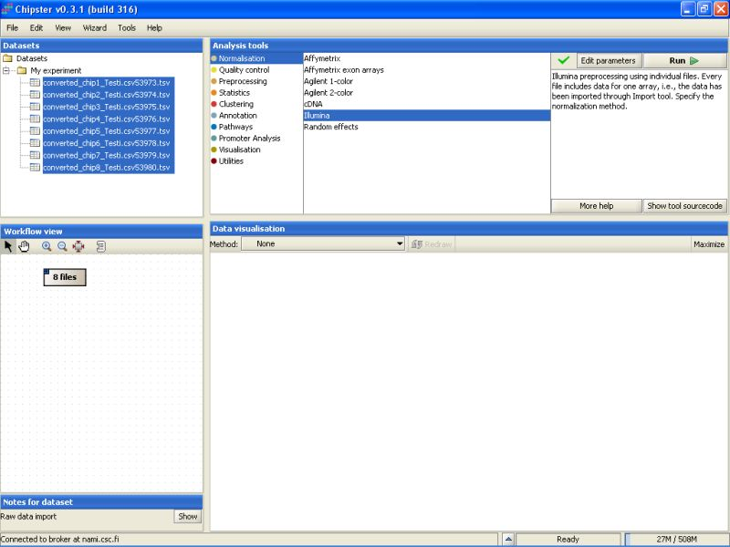
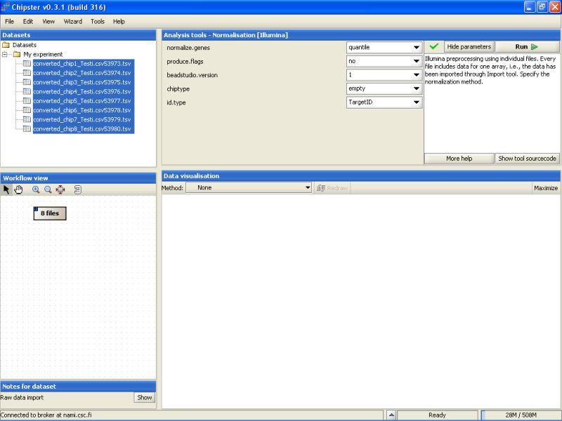
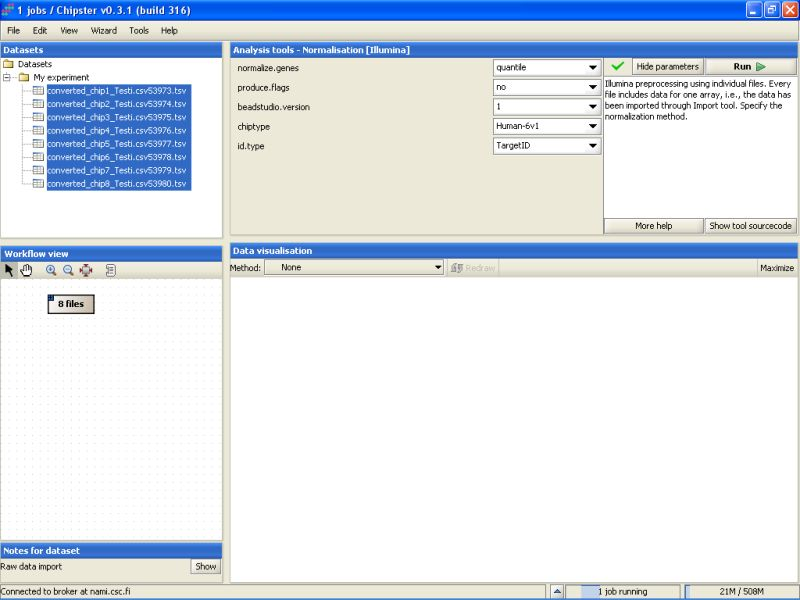
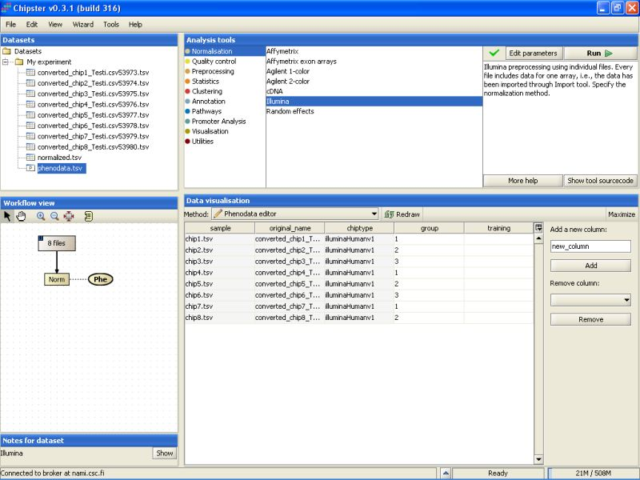

This outlines the normalization for BeadSummary data which was imported through the Import tool.
Select the files you want to normalize. Then select Normalization / Illumina from the Analysis tools:
Normalization parameters can be modified by clicking the Edit parameters-button. For Illumina, user can select the normalization type, whether to produce flags, BeadStudio version, what type of an array was used, and if the identifiers are Target or Probe IDs:
Normalization options are scale, quantile and vsn (you can also select 'none', if the data has been normalized in the BeadStudio). Currently quantile normalization is thought to be the best option, but it forces the distribution of intensities on every chip to be similar. Because of this you need to use PCA in addition to histograms and boxplots to identify the possibly deviant chips (bad data) for more reliable quality control.
If the flags are turned on, and the Detection columns were imported from the BeadSummaryData file, the Detection p-values are converted into P/M/A flags automatically.
Since BeadStudio versions output slightly different kinds of data, the version needs to be specified. Using a wrong version might ruin the downstream analyses.
If the chiptype is not specified, no annotation-based analyses, such as chromosome plots, GO-ontology analyses and annotation of gene lists are possible. So, if you want to run such analyses, please specify the chiptype you have used in the experiment.
After modifying the settings, click the Run-button to run the normalization. A blue bar starts moving in the lower-right corner. That indicates that a job is being run.
Normalization can take a rather long time (several minutes) depending on the type of normalization you have chosen. After the job is done, a new file (normalized.txt) should appear under the current folder in the Datasets.
Note that in the Workflow view the normalized data is coupled with phenodata. The next step would be to fill in the phenodata table, at least the group column, and describe the experimental design for the system. Group could be anything interesting. For example, if one is comparing cancer patients to their healthy controls, the controls would be the group number one and the cancer patients groups number two.
Click in the Workflow view on the phenodata to select it. Go to Data visualization, and select phenodata editor from the pull down menu.

Fill in the column called group according to the experimental variable you would like to test in the further analysis. You can rearrange the phenodata rows according to the original name by clicking on the column header. Every row represents one chip, and the group column should be filled for every chip. No empty cells or strings are allowed. You should type one number in every cell.
Once the group column in the phenodata has been filled, the small exclamation mark beside the phenodata in the Workflow view disappears to signal that you are ready to analyse the dataset.
Further analysis, such as filtering, statistical testing, clustering, etc. can now be performed using this normalized dataset.